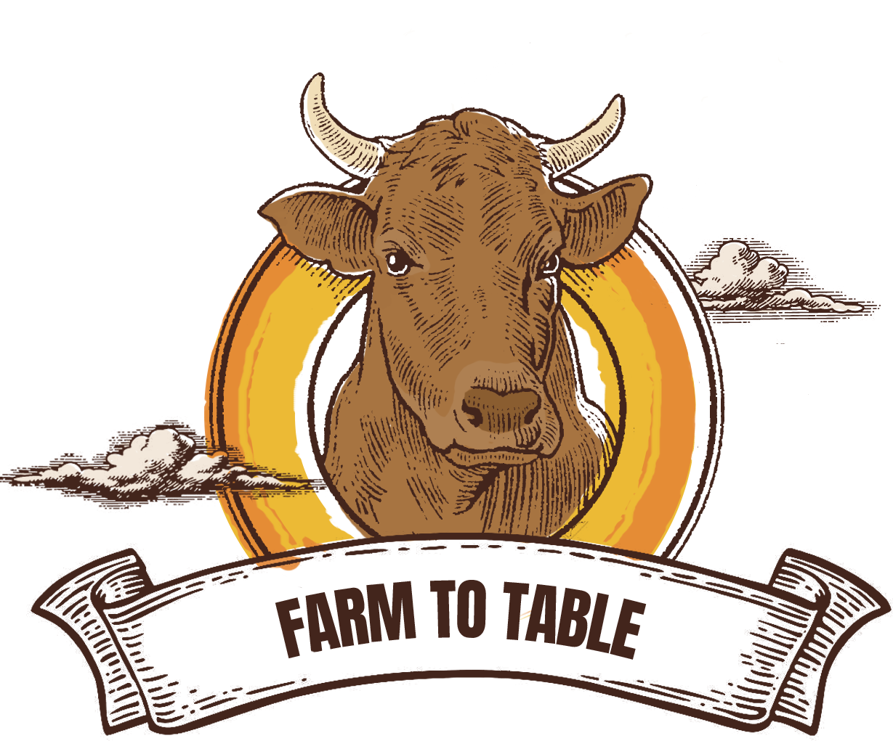
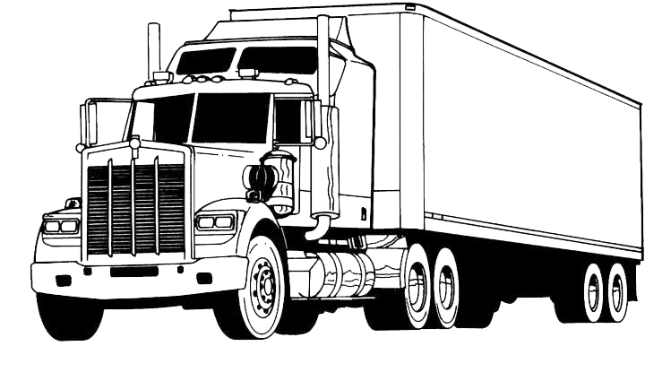

Discover the environmental impacts of mass beef
consumption, from the day a cow is born ot the steak
it would one day become.
FARMIN'
• ON THE FARM •
For each beefy pound on a cow's body,
50.7 lbs of CO2 are emitted and 1799 gallons
of water are consumed. That's a whole
lot of gas and water.
KILLIN'
• SLAUGHTERHOUSE •
Take a look inside a food processing
centre: home to all slicing, dicing, and plastic
packaging. Beware, slaughterhouse wastes
may pollute local waters!

TRUCKIN'
• TRANSPORTATION •
Ever wanted to take a cross-country road trip?
Escape the farm in an 18-wheeler truck with
your bovine friends, while leaving behind a
colossal trail of CO2!

DININ'
• DINNER TABLE •
This meal is brought to you by CO2 emissions,
water pollution, and deforestation.